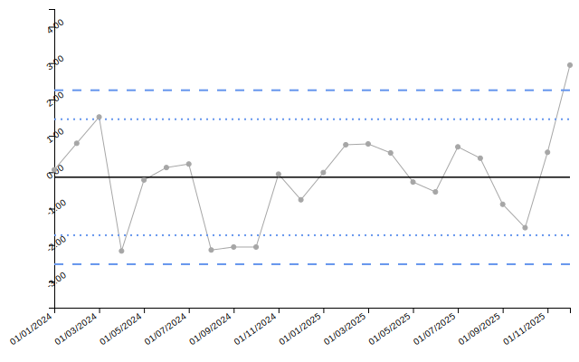
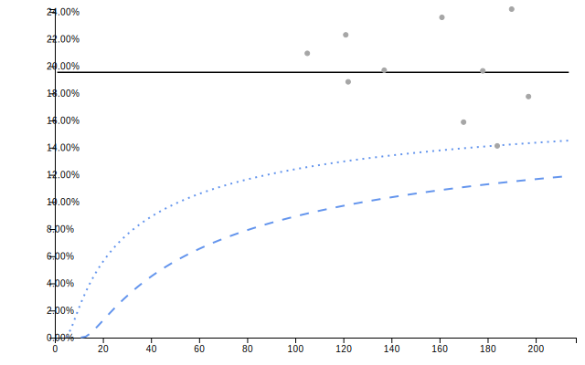

The controlcharts package aims to provide a comprehensive set of tools for both calculating and visualising statistical process control (SPC) charts and funnel plots in R.
The package is implemented as a wrapper around the existing code for the Power BI custom visuals for SPC Charts and Funnel Plots. As the data pre-processing, calculation of control limits, and plotting functions are all implemented in Javascript, this provides powerful flexibility for use in interactive contexts.
Installation
You can install the development version of controlcharts from GitHub with:
# install.packages("remotes")
remotes::install_github("AUS-DOH-Safety-and-Quality/controlcharts")Or you can install pre-built binaries from R-Universe:
install.packages("controlcharts", repos = c("https://AUS-DOH-Safety-and-Quality.r-universe.dev",
"https://cran.r-project.org"))Getting Started
Constructing SPC Charts
Consider a basic time-series, comprised of two-years of monthly data:
# Simulate 2 years of monthly data
dat <- data.frame(
month = seq(as.Date('2024-01-01'), length.out = 24, by = "month"),
y = rnorm(24)
)
knitr::kable(head(dat))| month | y |
|---|---|
| 2024-01-01 | 0.0672962 |
| 2024-02-01 | 0.7948403 |
| 2024-03-01 | 1.5177286 |
| 2024-04-01 | -2.1648999 |
| 2024-05-01 | -0.2143888 |
| 2024-06-01 | 0.1285904 |
By default, the spc() function will construct an i-chart (individuals chart; also referred to as an XmR-chart):
spc_chart <- controlcharts::spc(data = dat,
numerators = y,
keys = month)The result of the spc() function is a list containing three elements:
-
static_plot: a static SVG plot of the SPC chart -
html_plot: an HTML widget containing the interactive SPC chart (for use in Shiny/interactive contexts) -
limits: a data frame containing the calculated control limits
spc_chart$static_plot
# If you are using an interactive environment, you can display the HTML widget:
# spc_chart$html_plot| date | value | target | ll99 | ll95 | ll68 | ul68 | ul95 | ul99 | trend_line |
|---|---|---|---|---|---|---|---|---|---|
| 01/01/2024 | 0.07 | -0.14 | -2.53 | -1.73 | -0.93 | 0.66 | 1.46 | 2.25 | -0.56 |
| 01/02/2024 | 0.79 | -0.14 | -2.53 | -1.73 | -0.93 | 0.66 | 1.46 | 2.25 | -0.53 |
| 01/03/2024 | 1.52 | -0.14 | -2.53 | -1.73 | -0.93 | 0.66 | 1.46 | 2.25 | -0.49 |
| 01/04/2024 | -2.16 | -0.14 | -2.53 | -1.73 | -0.93 | 0.66 | 1.46 | 2.25 | -0.45 |
| 01/05/2024 | -0.21 | -0.14 | -2.53 | -1.73 | -0.93 | 0.66 | 1.46 | 2.25 | -0.42 |
| 01/06/2024 | 0.13 | -0.14 | -2.53 | -1.73 | -0.93 | 0.66 | 1.46 | 2.25 | -0.38 |
Funnel Plot
The same interface is provided for funnel charts. For this example, consider proportion data recorded by 10 organisations:
# Simulate proportion data for 10 organisations
denoms <- sample(100:200, 10)
funnel_data <- data.frame(
organisation = letters[1:10],
numerators = rbinom(10, size = denoms, prob = 0.2),
denominators = denoms
)
knitr::kable(funnel_data)| organisation | numerators | denominators |
|---|---|---|
| a | 27 | 170 |
| b | 23 | 122 |
| c | 35 | 178 |
| d | 26 | 184 |
| e | 38 | 161 |
| f | 22 | 105 |
| g | 46 | 190 |
| h | 27 | 121 |
| i | 27 | 137 |
| j | 35 | 197 |
For funnel plots, the default is a proportions (PR) chart:
funnel_chart <- controlcharts::funnel(data = funnel_data,
numerators = numerators,
denominators = denominators,
keys = organisation)
funnel_chart$static_plot
knitr::kable(funnel_chart$limits, digits = 2)| denominator | group | numerator | value | ll99 | ll95 | ll68 | ul68 | ul95 | ul99 | target |
|---|---|---|---|---|---|---|---|---|---|---|
| 105 | f | 22 | 20.95 | 9.15 | 12.57 | 15.85 | 23.54 | 27.65 | 32.71 | 19.55 |
| 121 | h | 27 | 22.31 | 9.75 | 13.01 | 16.10 | 23.26 | 27.06 | 31.74 | 19.55 |
| 122 | b | 23 | 18.85 | 9.78 | 13.03 | 16.11 | 23.24 | 27.03 | 31.69 | 19.55 |
| 137 | i | 27 | 19.71 | 10.26 | 13.37 | 16.30 | 23.03 | 26.59 | 30.96 | 19.55 |
| 161 | e | 38 | 23.60 | 10.89 | 13.81 | 16.54 | 22.75 | 26.02 | 30.02 | 19.55 |
| 170 | a | 27 | 15.88 | 11.09 | 13.96 | 16.62 | 22.66 | 25.84 | 29.72 | 19.55 |
| 178 | c | 35 | 19.66 | 11.26 | 14.08 | 16.68 | 22.59 | 25.69 | 29.47 | 19.55 |
| 184 | d | 26 | 14.13 | 11.38 | 14.16 | 16.73 | 22.54 | 25.58 | 29.30 | 19.55 |
| 190 | g | 46 | 24.21 | 11.50 | 14.24 | 16.77 | 22.49 | 25.48 | 29.13 | 19.55 |
| 197 | j | 35 | 17.77 | 11.63 | 14.33 | 16.82 | 22.44 | 25.37 | 28.95 | 19.55 |
Interactive Charts
The package is also uniquely suited to creating interactive SPC charts and funnel plots. See the vignette on interactive charts for more details and examples.